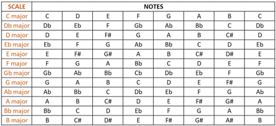
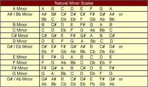
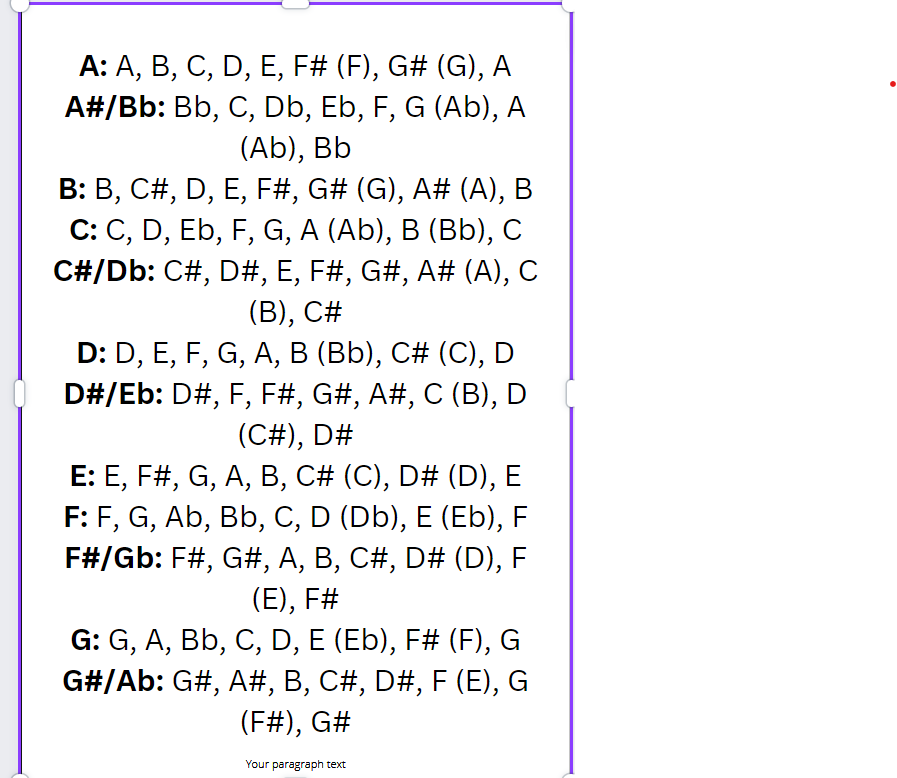
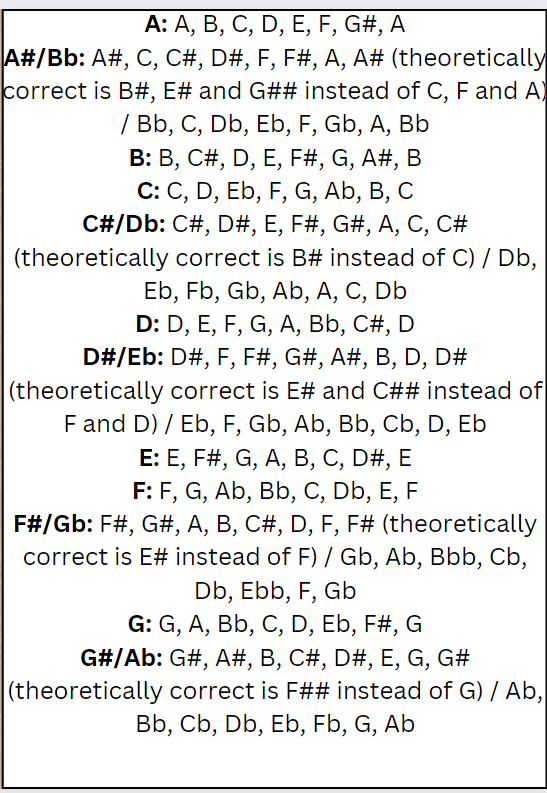
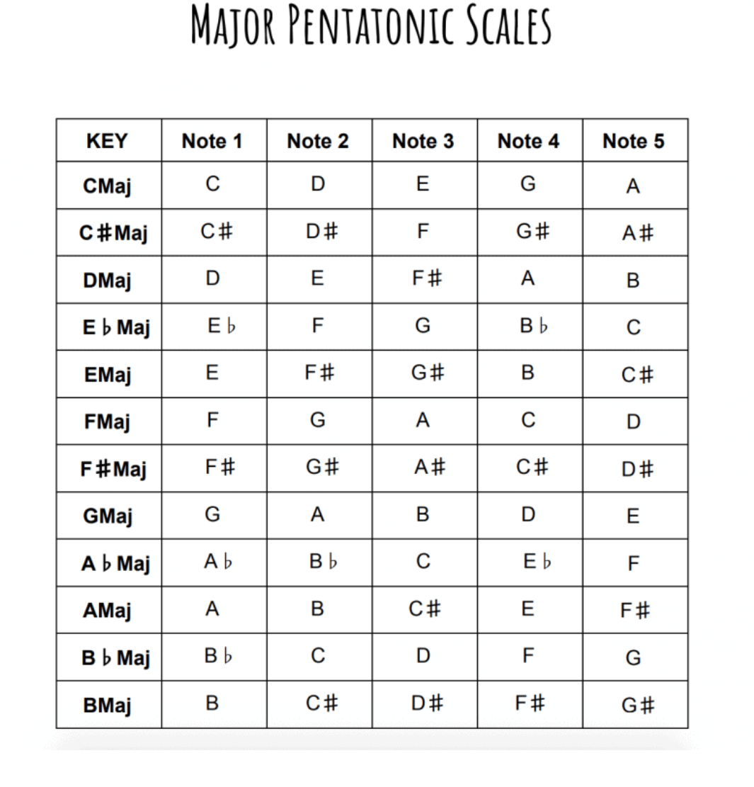
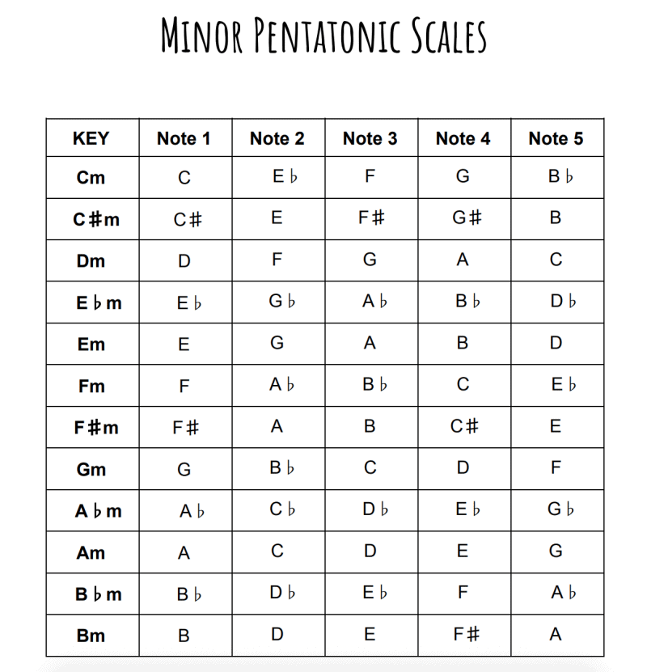

Scales
A scale is any set of musical notes ordered by fundamental frequency or pitch. A scale ordered by increasing pitch is an ascending scale, and a scale ordered by decreasing pitch is a descending scale.
Minor scales
the minor scale is three scale patterns - the natural minor scale (or Aeolian mode), the harmonic minor scale, and the melodic minor scale (ascending or descending) – rather than just two as with the major scale, which also has a harmonic form but lacks a melodic form.



Pentatonic Scales
Unlike the major scale, which is a seven note scale, the major pentatonic
scale consists of
five notes (“penta” = five, “tonic” = notes). The five notes of
the major pentatonic scale are
the root, 2nd, 3rd, 5th, and 6th degrees of
the major scale (the 4th and 7th scale degrees are left out).

